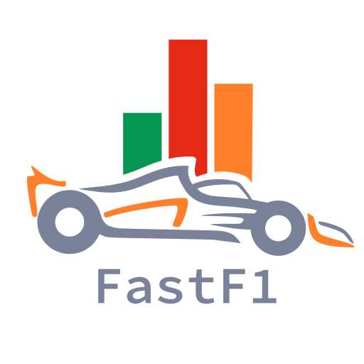

×

You’re the new Team Principal, the leader of an F1 team, responsible for directing the engineers, strategists, and a pair of drivers. Your job is to build a team capable of winning the Constructors’ Championship or identifying the driver who can fight for the World Title.
Our project explores the world of Formula One through the lens of data. Since its debut in 1950, F1 has held more than 1,100+ races across 76 seasons, 34 countries, and 77 circuits, producing an enormous amount of information, from driver and team profiles to lap times, pit stops, tire strategy, and performance metrics.
Using a variety of datasets, we investigate the central question: What makes an F1 Champion? By comparing drivers, analyzing car performance, and evaluating strategy and race conditions, we uncover the factors that define success.
As you move through each visualization, you’ll explore the four pillars every Team Principal must balance: the Driver, the Machine, the Conditions, and the Race itself, and decide where you’d invest to build your own champion.

A Python API for accessing detailed Formula 1 telemetry, timing, and session data.
Learn moreAn open API providing historical and real-time F1 race data such as weather, radio, and results.
Learn moreComprehensive F1 dataset with races, drivers, constructors, circuits, and championship history.
Learn moreComprehensive open-source F1 results database, which we used for detailed car build data.
Learn moreCan your driver master every circuit?
Choose a circuit, then use play, pause, and the slider to watch the race unfold. Hover or click a driver to open their profile.
Awaiting Circuit…
TAKEAWAY: Champions are the drivers who stay near the front on many different circuits, not just one favorite track.
Is your engineering team giving your drivers what they need to win?
Explore different the anatomy of an F1 car, then hover and click parts of the car to see how they influence performance.
Loading Car...
TAKEAWAY: To succeed in F1, you must secure a Works partnership, as manufacturers consistently outperform customer teams by a significant margin. Equally, you must prioritize mechanical reliability over raw speed, because even the fastest car cannot win a championship if it fails to finish the race.
What happens when the weather turns against you?
Explore how race performance changes under different weather conditions. Use the temperature slider to move through thousands of races, compare seasons, and hover over points to see how drivers and teams respond to shifts in temperature, wind, and rainfall.
Loading Weather Data...
TAKEAWAY: Top performers maintain their pace even as conditions change—their ability to adapt quickly is a defining trait of champions.
How much does starting position shape the final result?
Watch how drivers move from their starting position to the chequered flag. Hover a driver to see positions gained or lost and key race stats.
Loading Grid Viz...
TAKEAWAY: Starting position is one of the strongest predictors of finishing position in Formula One. Drivers who begin near the front usually stay there, so consistency in qualifying is often just as important as race pace.